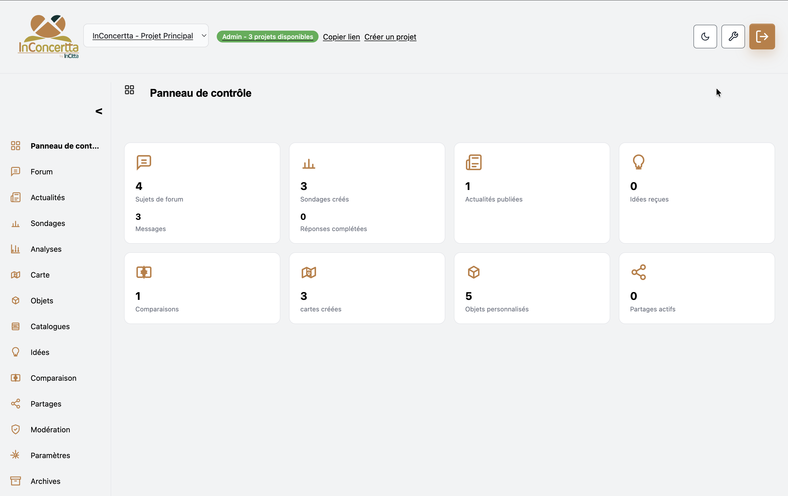
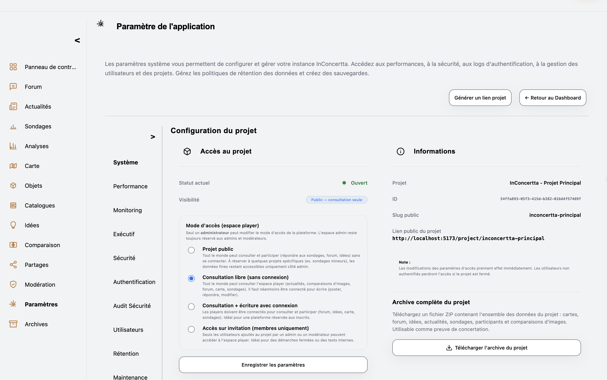
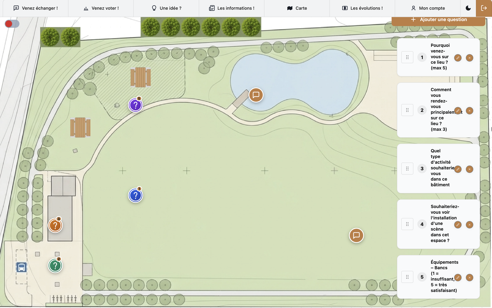
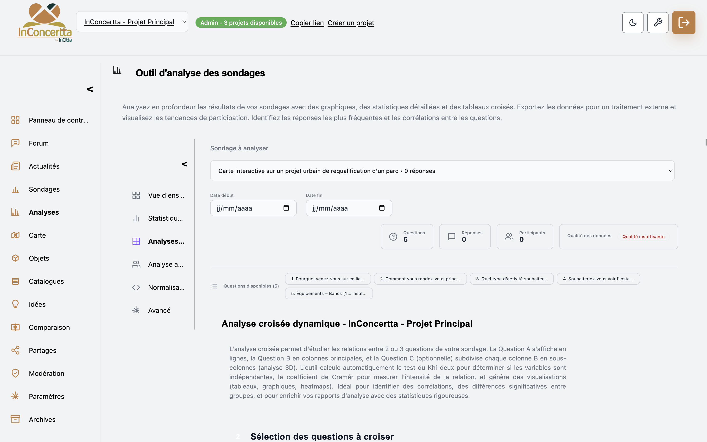

InConcertta est une application web sans installation — sur mobile, tablette ou bureau. Les accompagnements InCitta complètent l’outil lorsque vous souhaitez un service clé en main.
Ce qu’InConcertta change pour vous
Apaiser les tensions autour du projet
Donner sa place à chaque habitant
Des données dignes de vos arbitrages
Décider avec plus de clarté et de sérénité
RGPD
Traitement des données personnelles dans le respect du règlement européen : base légale, information des personnes, exercice des droits, sous-traitance encadrée et documentation adaptée aux responsables de traitement publics.
Hébergement
Données hébergées en Union européenne, sur une infrastructure reconnue (Supabase : base, authentification, fichiers) — critère souvent imposé par les marchés publics et les DSI territoriales.
Sécurité
Architecture conçue pour la confidentialité et l’intégrité des échanges : accès authentifiés, bonnes pratiques de stockage ; le détail opérationnel et juridique complète vos documents (mentions légales, politique de confidentialité de l’application).
Venez découvrir l’interface à destination du public : pour cela, cliquez sur Se connecter dans l’illustration ci-dessous.
Il s’agit d’un aperçu statique, pas de l’application réelle.
Réservé aux porteurs de projet, l’espace de gestion permet de régler les paramètres du projet et, notamment, l’accès au dispositif, de créer et paramétrer des cartes (fond, type, questions et sujets) et d’assembler les outils du projet : actualités, comparaisons d’images, partage de contenus. On y crée et analyse des sondages (y compris avec des questions prédéfinies), répond aux idées directement sur la plateforme, modère le forum et envoie des invitations. Un catalogue d’images dédié permet de tester équipements, scénarios ou propositions visuelles. Les exports aident à constituer un dossier sur la concertation. L’ensemble est modulable selon le contexte et la phase de la démarche.
Accès — ouverture large, invitation, listes, niveaux de participation.
Information — rédaction d’actualités pour en faire une revue de projet.
Carte — fond, grille, questions et sujets ancrés sur le territoire.
Participation — idées, forum, modération, invitations depuis l’espace de gestion.
Enquêtes — conception, paramétrage et exploitation des sondages ; analyses avancées (tris croisés, redressements par pondération, tests statistiques du type khi-deux (χ²)).
Images — catalogue pour comparer ou tester des propositions visuelles.
Restitution — exports pour un dossier de concertation exploitable.
Modularité — outils et réglages assemblés à la carte par projet.
Quelques vues de l’espace de gestion

1. Tableau de bord
Vue d’ensemble du projet et accès aux outils de gestion.

2. Paramètres du projet
Réglages du dispositif, accès, outils activés et modularité.

3. Grille et carte
Fond de plan, type de grille, questions et sujets liés au territoire.
4. Création de sondage
Conception d’enquêtes, dont questions prédéfinies.

5. Analyse des sondages
Exploitation des résultats (tris croisés, pondération, tests statistiques).
6. Boîte à idées
Suivi des contributions et réponses depuis la plateforme.
Du passage d’information à la co-construction, la plateforme s’adapte au niveau d’ambition que vous fixez pour associer habitants et usagers à votre projet.
Ce que l’application met à votre disposition
Un projet = un espace dédié.
Déployer un dispositif adapté au contexte local, sans mélanger les publics ni les contenus.
Permettre aux porteurs de projet de présenter, expliquer et faire évoluer leurs propositions — et de répondre aux participants depuis l’interface de gestion (échanges centralisés).
Donner aux participants la possibilité de réagir, proposer et co-construire, y compris depuis un smartphone (interface web adaptée).
L’enjeu : une concertation structurée, continue et exploitable, utile à la fois pour la participation et pour l’analyse et la décision.
Coup de cœur
Modularité : accès, outils, participation
Accès du très ouvert au fermé (invitation, liste, espace réservé). Outils activés selon les besoins.
La participation va de la consultation à la co-création sur la carte — selon concertation classique, budget participatif, information ou restitution.
Mobile : même parcours sur téléphone ou tablette via le navigateur.
Carte interactive & échelles
Modélisation du projet sur une grille spatiale superposable à un fond de plan, adaptable à différentes échelles d’aménagement (îlot, quartier, ville, agglomération). Mode personnel ou collaboratif en temps réel selon la configuration.
Questions & sujets sur la carte
Des questions et des sujets de forum peuvent être ancrés près d’éléments ou de zones du plan pour discuter d’un aménagement ciblé (espace vert, équipement, scénario localisé).
Coup de cœur
Sondages & analyses
Enquêtes paramétrables (types de questions, accès, consentement) et analyses statistiques : tableaux croisés, indicateurs, méthodes documentées pour exploiter les résultats de façon rigoureuse.
Idées & forum modéré
Les participants peuvent déposer des idées ; l’équipe projet assure le suivi et peut répondre depuis l’interface de gestion. Le forum permet les échanges avec modération ; les contacts par courriel peuvent aussi être traités dans le même espace, pour garder un dialogue unique avec les utilisateurs.
Partage des créations
Les créations cartographiques des participants peuvent être partagées, mises en avant dans une galerie et faire l’objet de votes selon les règles du projet.
Archivage & restitution
Exports (images, PDF, archives multi-cartes, sauvegardes de données) permettent de consigner les apports et d’alimenter un rapport global ou un bilan de concertation.
Formules et mise à votre disposition
L’outil est conçu pour se déployer par projet : vous ouvrez un espace dédié, vous le paramétrez et vous y ajoutez vos contenus — sans chantier informatique lourd. Vous pouvez ne demander un accompagnement que pour un seul dispositif ; lorsque le cadrage est clair, la mise en place peut être très rapide, en quelques jours, pour ouvrir la concertation sans traîner.
InConcertta est une solution clé en main : plateforme numérique et expertise en aménagement et participation. Elle aide à structurer et animer la participation, et à éclairer la décision.
Au-delà des fonctionnalités, l’objectif est d’accompagner le projet.
Structurer la démarche de concertation
Mobiliser les publics concernés
Valoriser et exploiter les contributions
Pensée pour les acteurs publics
La solution s’adresse notamment à :
les collectivités (communes, intercommunalités, régions) ;
les cabinets d’urbanisme et de concertation ;
les porteurs de projets territoriaux.
Un modèle qui s’ajuste à votre rythme
Plusieurs modalités commerciales sont possibles :
Service — accès à la plateforme pour vos concertations, en ponctuel (durée d’un dispositif) ou en usage récurrent sur la durée.
Offre personnalisée — charte graphique, paramétrage et accompagnement au montage.
Instance dédiée (white-label) — identité propre, base isolée, services associés.
Chaque formule peut inclure :
le déploiement technique de la plateforme
la prise en main et la formation des équipes
l’accompagnement à l’animation des démarches
InCitta & InConcertta
InCitta accompagne les territoires sur la programmation, la concertation et la stratégie de projet.
InConcertta en est le prolongement numérique.
Un support interactif pour présenter et faire évoluer les projets
Des échanges structurés entre acteurs et participants
Des analyses et restitutions directement exploitables
Mise en service selon la formule (ponctuel, récurrent ou instance dédiée)
Formation et cadrage méthodologique
Calibrage de la plateforme selon votre dispositif de participation
L’ensemble forme une approche cohérente combinant outil numérique et expertise terrain.